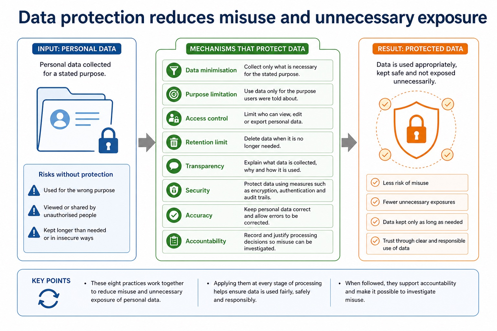

Cambridge AS9618 | Paper 1 | Section 7: Ethics and ownership
Professional ethics and professional bodies
Flexible-depth lesson
Professional ethics and professional bodies
S7.01, S7.02 | Select what to omit, teach briefly or explore in depth.
Quickdiagnose + essentials
Fullcomplete explanation
Deepprerequisites + extension
Choosepractice by need
Teacher choice
Choose the depth for this group
Quick route
Use the diagnostic, learning objectives, first worked example and foundation question. Stop once the learner can explain the central distinction accurately.
Full route
Teach every core explanation point, the worked example and all lesson questions. Use the visual only when it adds a different representation.
Deep route
Add the prerequisite refresher, ask learners to connect the concept checklist, discuss the labelled extension and complete a transfer question without a model answer.
Part 1 | optional depth
Prerequisite knowledge and quick diagnostic
Recall the main conclusion from Lesson 034: Validation, verification, parity and checksums.
Give one accurate definition or method step before continuing. If it is missing, revisit only that prerequisite.
Part 2 | deliberately over-complete
Knowledge explanation
Learning objectives
Show understanding of the need for and purpose of ethics as a computing professional.
Show understanding of the importance of joining a professional ethical body, including BCS and IEEE.
Open the concept checklist and choose what to teach
professional
ethics
purpose
joining
British
Computer
Society
IEEE
codes
conduct
Detailed explanation
Teach all points, or select only the ones this group needs. The list is intentionally fuller than a fixed lesson slot.
Version 2 requires both the need for professional ethics and its purpose; evidence must connect responsible professional decisions to public interest, competence and accountability.
Version 2 names BCS (British Computer Society) and IEEE (Institute of Electrical and Electronics Engineers). Evidence must teach why joining matters, not merely expand the abbreviations or mention a code.
Professional ethics provides principles for deciding how a computing professional should act when technical choices can affect clients, users, colleagues or wider society. Its purpose is to protect the public interest, support competent and honest work, and make professionals accountable for foreseeable consequences rather than treating legal compliance or a manager's instruction as the whole decision.
Joining a professional ethical body is important because membership gives a practitioner an explicit code of conduct, current professional guidance, continuing professional development and a community through which standards and misconduct can be challenged. The British Computer Society (BCS) and the Institute of Electrical and Electronics Engineers (IEEE) are the two named syllabus examples. Their codes promote public interest, competence, integrity, privacy and accountability; a code guides judgement but does not replace law.
For a given situation, decide whether an action is ethical or unethical by identifying the decision, affected stakeholders, benefits, harms, rights and responsibilities. Then explain the impact of acting ethically and the impact of acting unethically. A defensible conclusion applies evidence, proportionality and safeguards; it is not a one-sided list or an unsupported personal opinion.
Professional ethics has a purpose: computing professionals must protect public interest, work competently and remain accountable for consequences. Joining a professional ethical body such as the British Computer Society (BCS) or the Institute of Electrical and Electronics Engineers (IEEE) provides codes of conduct, guidance, continuing professional development and a community that supports standards. In a situation, judge whether action is ethical or unethical and explain stakeholder impacts of both choices.
Worked example
Unsafe release pressure: A developer is told to hide failed safety tests so a medical system can launch on time. Concealing the evidence would be unethical because patients could be harmed and trust would be damaged. The developer acts ethically by documenting the risk, refusing to falsify the record and escalating through BCS/IEEE-style professional channels. This may delay release and cost money, but protects patients, supports accountability and allows the defect to be corrected.

Data protection reduces misuse and unnecessary exposure. One maintained explanation is shown as an image on larger screens and as text on small screens.
Data minimisation Collect only what is necessary for the stated purpose.
Purpose limitation Use data only for the purpose users were told about.
Access control Limit who can view, edit or export personal data.
Retention limit Delete data when it is no longer needed.
Transparency Explain what data is collected, why and how it is used.
Part 3 | select by learner need
Practice by question type
identifyrecallfoundation2 marks
Question 1. Identify the two professional ethical bodies required in Section 7.
Show answer and marking guidance
Answer: British Computer Society (BCS) and Institute of Electrical and Electronics Engineers (IEEE).
Marking guidance: Award one mark for each distinct, technically accurate point or method step.
Common error: For the command word identify, perform that exact action; do not replace it with an unrelated fact.
evaluateevaluateapplication8 marks
Question 2. A company proposes AI facial recognition for employee attendance. Evaluate the proposal using professional ethics and social, economic and environmental impacts.
Show answer and marking guidance
Answer: identifies the AI biometric-matching application or mechanism; explains a social benefit or harm for employees or the company; explains an economic benefit or cost; explains an environmental benefit or computing/resource cost; applies professional-ethics duties such as public interest, privacy, competence or accountability; explains a matching safeguard such as human review, appeal, access/retention limits or monitoring; considers an alternative such as cards or manual attendance; reaches a conditional judgement using named benefits, harms and safeguards
Marking guidance: Do not accept a topic-name list, a one-sided AI claim, or BCS/IEEE as unexplained initials.
Common error: Do not repeat the same point in different words; each mark needs a separate idea or method step.
explainexplaintransfer6 marks
Question 3. A software engineer is asked to deploy a safety-critical update despite unresolved test failures. Determine whether complying silently would be ethical or unethical, explain two stakeholder impacts, and explain how membership of BCS or IEEE could support the engineer's response.
Show answer and marking guidance
Answer: identifies silent deployment/concealment as unethical with a reason; explains one impact on users or the public; explains one impact on the organisation or professional; explains that a BCS/IEEE code supplies professional standards or public-interest duties; explains that professional membership supplies guidance, development, accountability or an escalation community; gives a justified ethical action such as document, refuse concealment, escalate or delay release
Marking guidance: Do not award a label such as 'unethical' without impact, or claim that joining a body removes the need for evidence and professional judgement.
Common error: Do not copy the worked example unchanged; transfer the method and check it against the new context.
Related past-paper indexes
Reference
Marks
Command word
Question type
9618/13/W/24 Q5(b)
3
complete
recall
Index only: Cambridge question and mark-scheme wording is not reproduced on this public course page.
Part 4 | close when ready
Summary and exam reminders
Summary
Define professional ethics and professional bodies with the exact technical vocabulary expected by the syllabus.
Use the lesson method on a fresh context and show the intermediate decision, representation or calculation.
Match the shape of the answer to the command word and the available marks.
Check the final answer against the scenario instead of repeating a memorised sentence.
Common error to correct
Students often write personal opinions only. Correction: ethics answers need stakeholders, evidence and balanced judgement.
Exam technique
Follow the command word: state gives a fact; explain links a cause to a consequence; compare covers both sides.
Match the number of independent points or method steps to the available marks.
For professional ethics and professional bodies, use the exact technical term before applying it to the scenario.